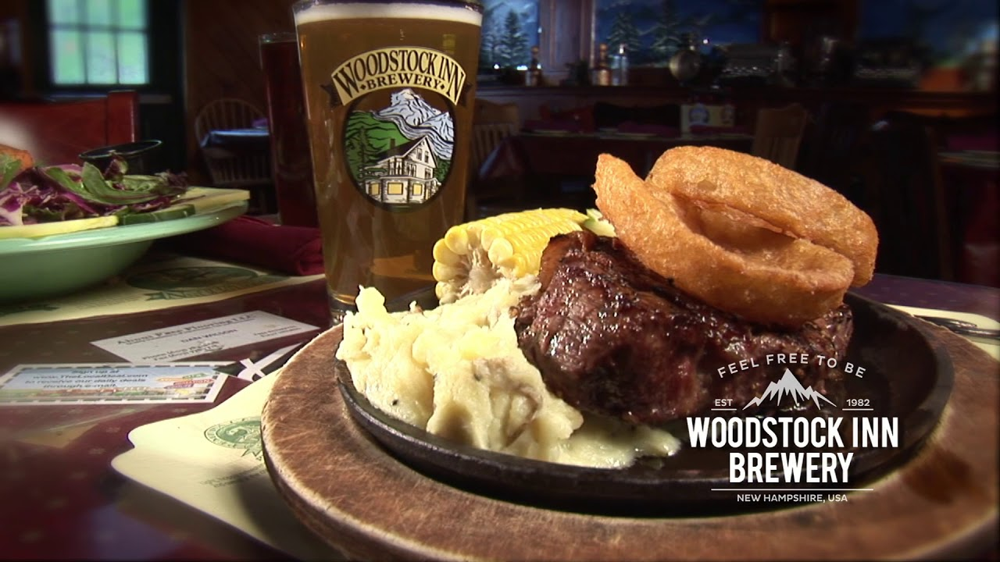

Back to the Homepage
Places To Eat
Below are a list of award-winning restaurants and dining spots in the White Mountains of New Hampshire.
GH Pizza

GH’s homemade pizza and subs are a favorite among both locals and tourists. Its low-key style is perfect after a long day of fun.
You can even choose to eat outside on one of their many picnic tables. GH is also within walking distance of many shops and attractions.
Black Mountain Burger Co.
Black Mountain Burger Co. is described as being a local burger joint with a laid-back vibe serving creative,
scratch-made patties and comfort eats. They offer a variety of foods to choose from including salads, homemade angus beef and
bean chili, homemade mac n' cheese, soups, appetizers, vegetarian options, sandwiches, burgers (of course!), hotdogs, desserts, rootbeer and
orange cream floats. Trip Advisor has awarded them the "Certificate of Excellence" four years
in a row and they consistently remain in the top four of all restaurants in the White Mountains of New Hampshire.
White Mountain Bagel Co.
White Mountain Bagel Co. is open daily at 6:30am. Stop in to get a fresh baked bagel, coffee or cappuccino, breakfast and lunch sandwiches, and assorted baked goods.
The Woodstock Inn

On Christmas Day 1982, the house that became home to the Woodstock Inn opened, which then boasted four guest rooms, a 25-seat restaurant and a room for the owners up in the attic.
In the 30 years since that day, the Woodstock Inn has become the social center for locals and a home-away-from-home for visitors to return to year after year. They are drawn
to the fine food, warm hospitality and even a sense of belonging each time they come back to visit, making true the slogan, ‘Great Taste from a Special Place.’ The Inn is known for its handcrafted brews, burgers, steaks, pizzas, and more.
Polly's Pancake Parlor
Polly Pancake Parlor has been serving delicious home cooked meals for over 75 years. Come and enjoy their famous Oatmeal Buttermilk, Buckwheat, or Whole Wheat pancakes or get a waffle with famous New Hampshire maple syrup. This is a great
place to enjoy the beautiful mountain views while eating delicious food. Don’t forget to also pick up some pancake mix or maple syrup to enjoy back at home.
Ice Cream Delights
Stop by Ice Cream Delights to pick up a delicious snack. Ice Cream Delights has a wide variety of flavors from classic vanilla to peanut butter cup or purple cow. Ice Cream Delights also serves soft-serve ice cream, frozen yogurt, and other sweet treats.
Located on the side of GH Pizza serves as the perfect excuse to buy an ice cream after lunch or dinner. Also within walking distance of shops and attractions.